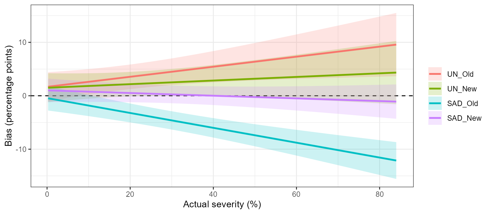
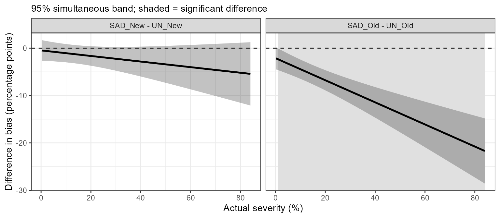
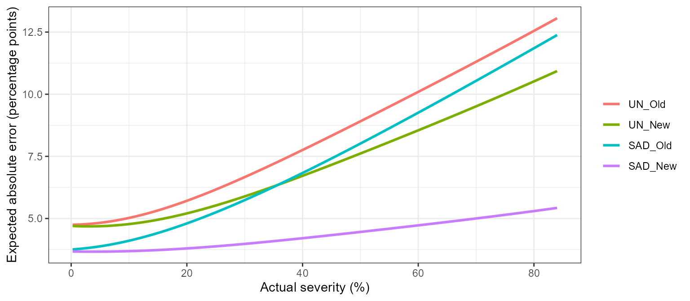
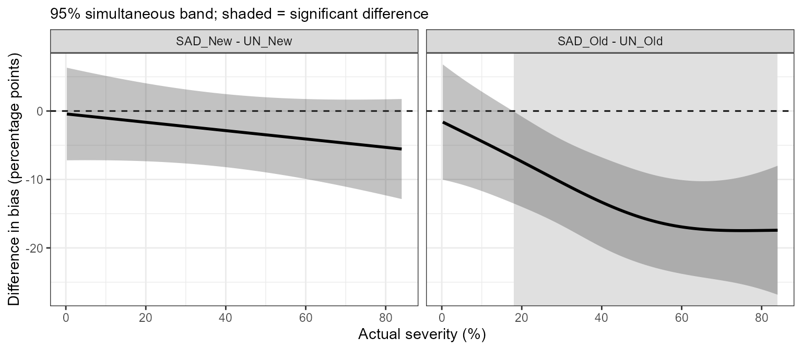
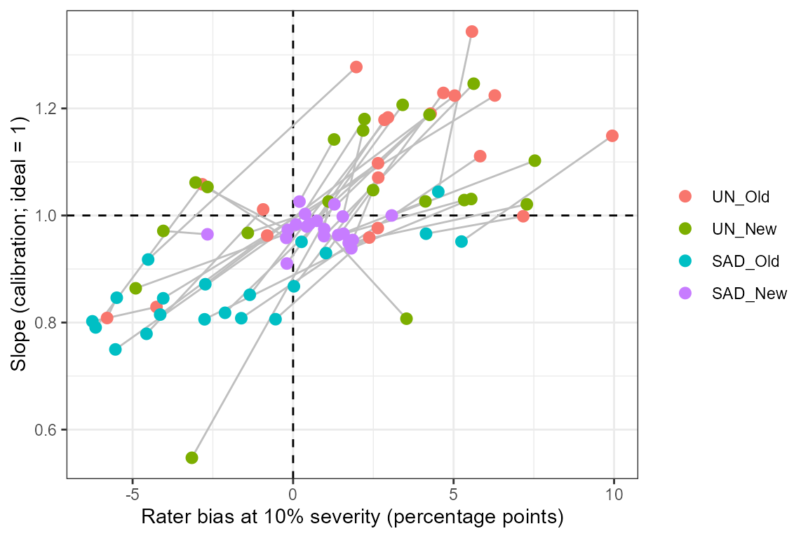

Introduction
Standard area diagrams (SADs) are sets of images of diseased organs with known severity that raters consult while estimating severity by eye. A new SAD is usually validated by asking a group of raters to assess the same images without and then with the SAD, and comparing the accuracy of the two sets of estimates.
The sad_* functions of {r4pde} cover two ways of
analysing such a study:
sad_data() organise and check the estimates
│
├── conventional, two stages
│ sad_ccc() Lin's statistics per rater and condition
│ sad_compare() means and Tukey letters by condition
│ sad_reliability() ICC and OCC among raters
│ sad_plots() exploratory figures
│
└── one stage, hierarchical model
sad_fit() mixed model of all estimates
sad_curve() bias, variance and expected error along severity;
functional comparison of conditions
sad_regions() severity ranges where conditions differ
sad_raters(), sad_images() rater calibration and image difficulty
sad_simulate() power for planning a new studyThe example uses SADRustSoybean, from the study of
Franceschi et al. (2020). Forty raters estimated the severity of soybean
rust on 50 leaves without a SAD and then with a SAD. Raters 1 to 20 used
an old SAD and raters 21 to 40 a new one. The design therefore compares
two SADs, each against its own unaided baseline.
Preparing the data
The estimates are in wide format, one column per method.
wide names the estimate columns, and its names become the
method labels. group says which SAD each rater used, so
there are four conditions.
x <- sad_data(SADRustSoybean, rater = "rater", image = "leaf", actual = "actual",
wide = c(UN = "unaided", SAD = "aided"), group = "sad")
x
#> SAD validation data (paired design): 40 raters, 50 images, 4000 estimates
#> Conditions: UN_Old, UN_New, SAD_Old, SAD_New
#> # A tibble: 4,000 × 8
#> rater image actual estimate method group condition error
#> <fct> <fct> <dbl> <dbl> <fct> <fct> <fct> <dbl>
#> 1 1 1 0.25 5 UN Old UN_Old 4.75
#> 2 1 1 0.25 0.6 SAD Old SAD_Old 0.35
#> 3 1 2 2.5 15 UN Old UN_Old 12.5
#> 4 1 2 2.5 5 SAD Old SAD_Old 2.5
#> 5 1 3 7.24 10 UN Old UN_Old 2.76
#> 6 1 3 7.24 7 SAD Old SAD_Old -0.240
#> 7 1 4 7.31 20 UN Old UN_Old 12.7
#> 8 1 4 7.31 10 SAD Old SAD_Old 2.69
#> 9 1 5 9.07 15 UN Old UN_Old 5.93
#> 10 1 5 9.07 18 SAD Old SAD_Old 8.93
#> # ℹ 3,990 more rowsFor a study with a single SAD, leave out group:
Conventional analysis
Lin’s concordance per rater
The first stage summarises each rater under each condition by Lin’s concordance correlation coefficient (\(\rho_c\)) and its components: precision (\(r\)), the bias correction factor (\(C_b\)), the scale shift (\(v\)) and the location shift (\(u\), negative when the rater underestimates).
cc <- sad_ccc(x)
head(cc)
#> # A tibble: 6 × 12
#> rater group method condition n rho_c r Cb v u intercept
#> <fct> <fct> <fct> <fct> <int> <dbl> <dbl> <dbl> <dbl> <dbl> <dbl>
#> 1 1 Old UN UN_Old 50 0.901 0.942 0.956 1.05 0.297 7.22
#> 2 2 Old UN UN_Old 50 0.906 0.923 0.982 1.18 -0.0998 -5.85
#> 3 3 Old UN UN_Old 50 0.829 0.915 0.907 1.34 0.346 0.259
#> 4 4 Old UN UN_Old 50 0.923 0.927 0.996 1.09 0.0301 0.211
#> 5 5 Old UN UN_Old 50 0.771 0.916 0.841 1.36 0.531 4.35
#> 6 6 Old UN UN_Old 50 0.869 0.897 0.969 1.18 0.191 2.31
#> # ℹ 1 more variable: slope <dbl>Comparing conditions
The second stage compares the means of these statistics between conditions. Because the same raters assessed the images without and with the SAD, a mixed model with rater as random effect is used, followed by Tukey’s test. The table matches Table 2 of Franceschi et al. (2020).
cmp <- sad_compare(x, cc)
cmp
#> Lin's statistics by condition - linear mixed model, rater random
#> Means followed by the same letter do not differ (tukey, alpha = 0.05).
#>
#> condition N u v Cb r rho_c
#> UN_Old 20 0.21 a 1.23 a 0.90 b 0.89 b 0.80 b
#> UN_New 20 0.10 a 1.19 a 0.91 b 0.88 b 0.80 b
#> SAD_Old 20 -0.29 b 0.97 b 0.92 b 0.90 b 0.83 b
#> SAD_New 20 0.00 a 1.00 b 1.00 a 0.97 a 0.96 aInter-rater reliability
sad_reliability(x)
#> # A tibble: 4 × 7
#> condition ICC ICC_lower ICC_upper OCC n_raters n_images
#> <fct> <dbl> <dbl> <dbl> <dbl> <int> <int>
#> 1 UN_Old 0.749 0.650 0.833 0.747 20 50
#> 2 UN_New 0.739 0.644 0.823 0.736 20 50
#> 3 SAD_Old 0.762 0.673 0.840 0.760 20 50
#> 4 SAD_New 0.942 0.918 0.962 0.941 20 50Exploratory plots
p <- sad_plots(x, cc, baseline = "UN")
p$scatter
p$box_ccc
p$gain_vs_baseline
The new SAD improved agreement for every rater, while the old SAD helped some raters and made others worse.
One-stage hierarchical model
The two-stage analysis reduces 50 estimates per rater to a single
number, and cannot say at which severity a SAD helps.
sad_fit() models all estimates at once: each condition has
its own bias and calibration slope, raters have their own intercepts and
slopes in each method, images have an intrinsic difficulty and the
residual variance changes with severity and condition.
fit <- sad_fit(x)
#> Structure 'full' did not converge; trying the next one.
#> Structure 'noim' did not converge; trying the next one.
fit
#> One-stage model for SAD validation
#> family: gaussian | dispersion: quad | rater structure: sep
#> severity centred at 10%, in units of 10 percentage points
#> 40 raters, 50 images, 4000 estimates; conditions: UN_Old, UN_New, SAD_Old, SAD_New
#> AIC = 28896.6structure = "auto" tries richer random-effects
structures first and keeps the first that converges.
Bias and expected error along the severity range
sad_curve() turns the model into curves. With
reference = "UN", each SAD is compared with the unaided
estimates of the same raters, using simultaneous confidence bands over
the whole severity range.
cv <- sad_curve(fit, reference = "UN")
sad_regions(cv)
#> # A tibble: 1 × 4
#> contrast from to direction
#> <chr> <dbl> <dbl> <chr>
#> 1 SAD_Old - UN_Old 1.10 84 a < b
plot(cv, "bias")
plot(cv, "difference")
The old SAD shifted estimates downwards, and the shift grows with severity. The new SAD did not change the bias significantly anywhere in the range. Its benefit is precision, which shows in the expected absolute error, which combines bias and the variation among raters, among images and within raters:
plot(cv, "expected_abs_error")
A functional model for the error curves
type = "smooth" replaces the straight lines by smooth
error curves, with a random smooth curve per rater, fitted by
mgcv::bam(). It shows where along the severity range the
two conditions differ, without assuming a linear bias.
cs <- sad_curve(fit, type = "smooth", reference = "UN")
sad_regions(cs)
#> # A tibble: 1 × 4
#> contrast from to direction
#> <chr> <dbl> <dbl> <chr>
#> 1 SAD_Old - UN_Old 18.0 84 a < b
plot(cs, "difference")
Raters and images
rt <- sad_raters(fit)
plot_sad_raters(rt)
head(sad_images(fit))
#> # A tibble: 6 × 4
#> image actual difficulty se
#> <chr> <dbl> <dbl> <dbl>
#> 1 38 55.5 9.23 1.23
#> 2 41 62.7 5.64 1.23
#> 3 35 53.1 -5.52 1.20
#> 4 25 36.7 5.37 1.07
#> 5 14 23.6 -5.27 0.936
#> 6 17 25.8 4.83 0.944Images with large absolute difficulty were consistently over- or underestimated by all raters and deserve a second look.
Planning a new study
sad_simulate() estimates the power of the paired t test
on \(\rho_c\) and of the likelihood
ratio test of the one-stage model for a given number of raters and
images. Each scenario fits many models, so the call below is not
run.
sad_simulate(n_rater = c(10, 20), n_image = c(20, 40), nsim = 200,
shift = -3, precision = 0.8, cores = 4)